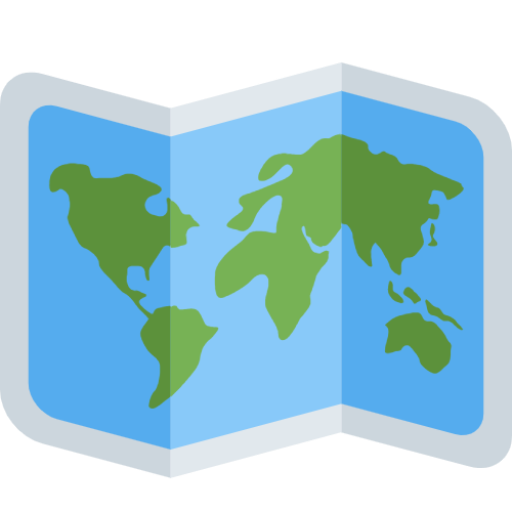

Pack your patience: millions of people visit Yosemite from April through October. Yosemite Valley is the main destination for most visitors but there are many places to go in the park. Early birds avoid traffic! From spring through fall, arrive in the park before or after peak hours (before 9 am and after 5 pm) to avoid delays and traffic congestion. Plan ahead: Due to current health guidelines, reservations are now required to enter Yosemite, as well as for lodging, camping, and backpacking. Keep wildlife wild: do not approach or feed animals. Drive responsibly: observe posted speed limits and use pullouts to take pictures and let other cars pass. Protect Yosemite’s bears: always practice proper food storage and follow speed limits. Staying connected: cellular service is limited. Don’t be surprised if you can’t receive calls or texts in the park. How can you help four million people? Learn how to visit Yosemite in a way that is fun, memorable, and safe.
We've made this series of videos to help you plan your trip. So far, we have a general orientation video, along with videos about easy, moderate, and strenuous day hikes in Yosemite Valley.

The Yosemite Conservancy bookstore specializes in the very best Yosemite guides, maps, and books. Many of our titles are written by park based experts, making them some of the most comprehensive resources you will have.